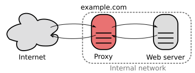

Running Node.js Alongside Apache
Using Reverse Proxy
2013-02-10 Updated 2025-12-31 · 1f8c246Running node alongside Apache takes little effort, all it requires is a reverse proxy, which is way less of an effort to set up in Apache than it is in IIS and a way to run your node process as a service.

To set up a reverse proxy in apache simply add the code in the following gist to the end of your httpd.conf (located at /etc/apache2 on OSX) just before the line: Include /private/etc/apache2/other/*.conf.
ProxyPass /node http://localhost:8080
ProxyPassReverse /node http://localhost:8080
This will re-route any traffic from yourserver/node to yourserver:8080. Of course the ProxyPass line can be edited according to your liking, but this is just an example.
Thats it when it comes to the reverse proxy, all you have to do is restart apache and all requests to yourserver/node will now go to the node process running at yourserver:8080.
Forever
Now that we have Apache rerouting the traffic to the right spot, we should set up the node server as a daemon so that it's always up, there are many ways to do this but one of the easiest is using nodejitsu's forever.
To set up your node server as a daemon using forever, just run the following command:
forever start server.js
There you have it, if all goes well you will now have your node.js server running alongside apache.
Originally posted on Blogspot